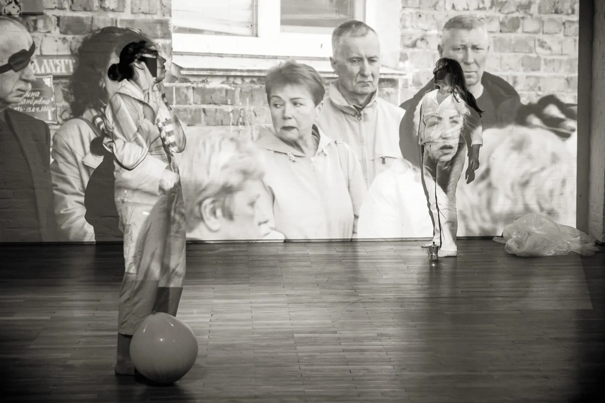
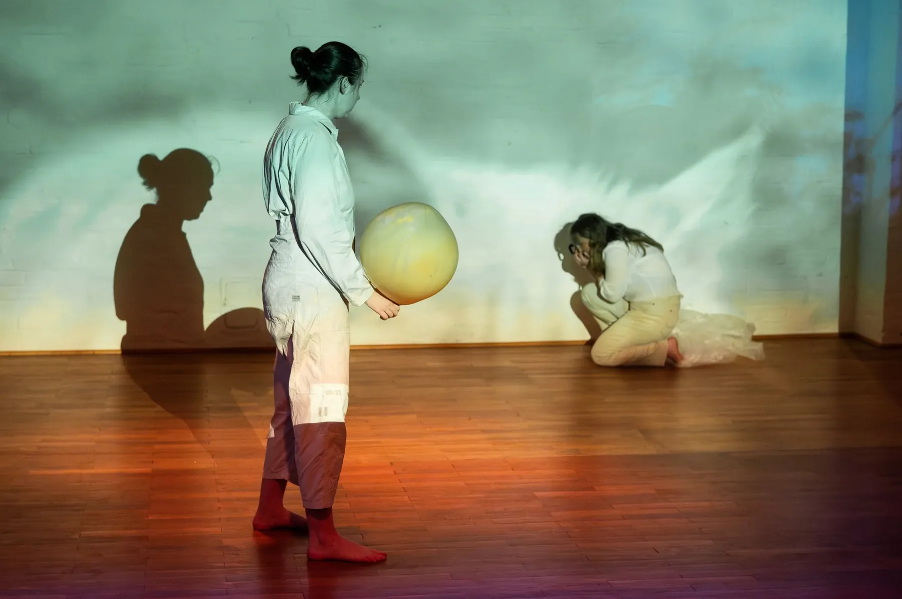
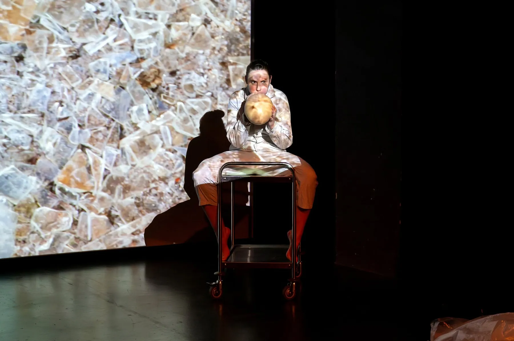

2025 / Кельн / Берлін
SHARDS OF NORMALITY
Міжнародний ансамблевий проєкт, представлений у Freies Werkstatt Theater Köln у межах Common Struggles та в Heizhaus, Uferstudios Berlin. Робота досліджує фрагментарність повсякденності й способи колективно збирати нове відчуття нормальності.

